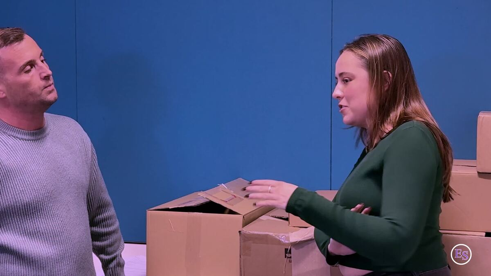
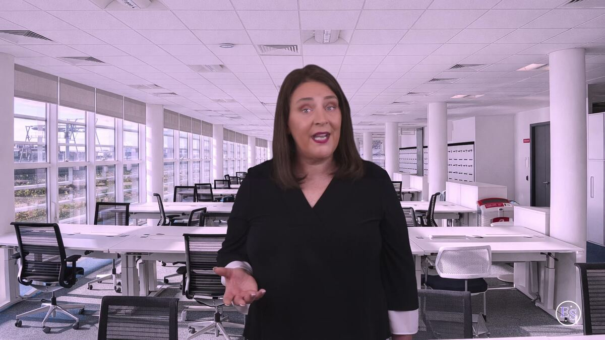
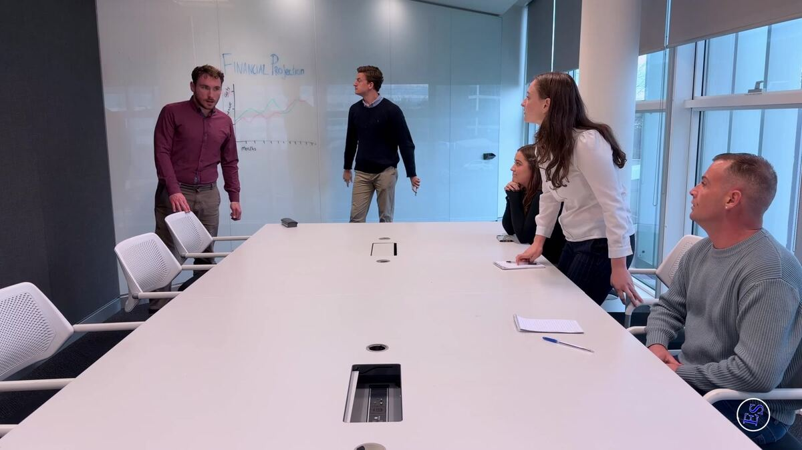
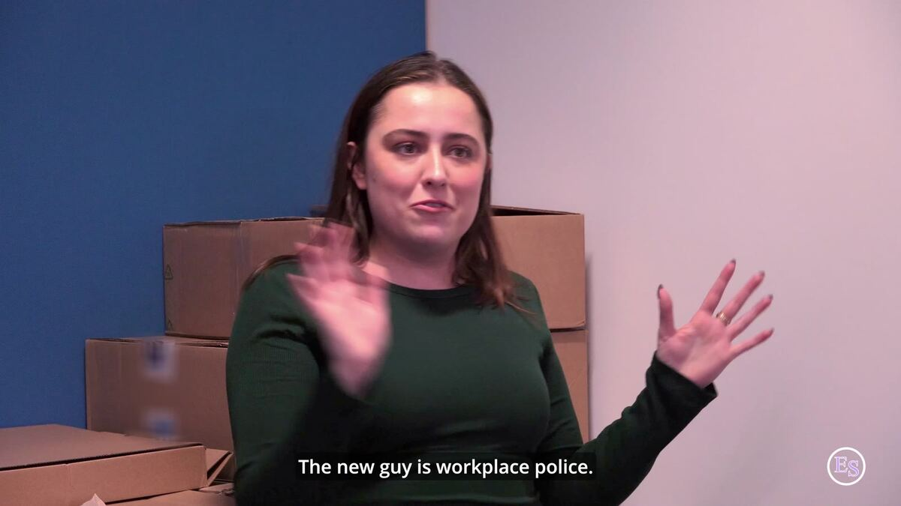
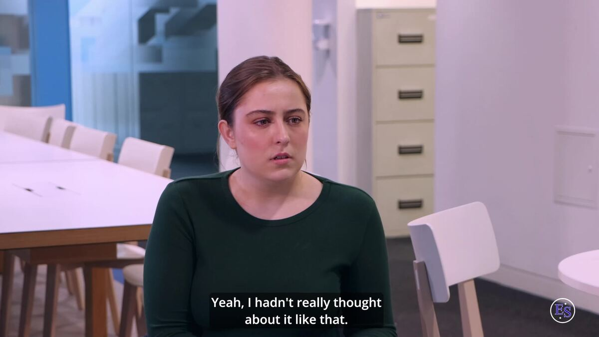

[LinkedIn post image]
{{n}}
LIRead on LinkedIn →

Immersive, scenario-based learning that helps managers handle difficult workplace conversations earlier – before they become grievances, disciplinaries or formal HR cases.
Built by HR practitioners · Real actors, real workplace scenarios · Designed for stores, sites and shifts
Every time a manager avoids a difficult conversation, the problem doesn’t go away – it escalates. An informal issue becomes a formal grievance. A performance concern becomes a disciplinary hearing. Workplace tension becomes a dignity-at-work complaint.
By the time it reaches HR, you’re spending 12+ hours on a single case, reconstructing how it got there. Formal process. Documentation. Legal exposure. WRC risk.
Meanwhile, employees walk in prepared – they’ve checked their rights online, often with ChatGPT. Your managers come in cold.
The conversation was delayed. The problem wasn’t.

We’ve watched capable managers freeze, say the wrong thing or make a situation more formal than it needed to be. Not because they didn’t care – because nobody ever showed them how these conversations really unfold.
We’ve watched preventable issues become formal cases.
Enhancing Skills was founded by Irene Frazer, an HR leader with [X] years’ experience across healthcare, retail, aviation and distribution – including Head of HR at St Vincent’s Hospital and CEO of the Royal Hospital Donnybrook.
She went looking for training she could give her own clients. In-house courses, IMI programmes, generic e-learning, AI tools – none of them addressed the real problem: the interpersonal dynamics of the conversation itself. She couldn’t find it. So we built it.
Every difficult conversation has a moment where it can go either way. Our episodes stop at that moment and ask you to choose. You see where your choice leads – and a short reflection explains why one approach works better than another.
From Dignity at Work, Episode One. It starts with banter, becomes a pattern, and someone has to say something. Jack and Cathy take very different approaches.
Watch the full episode free
THE SCENESusan’s “banter” towards Simon has crossed a line. Two colleagues decide to say something to her.


{{outcome.quote}}
Why: {{outcome.why}}
Short episodes. Watch the one you need the night before a difficult conversation – or binge the lot.
Explore what we doDifficult conversations happen on shop floors, in back rooms, beside production lines and between shifts. Your managers are operational first and people managers second – and HR is rarely in the room.
Immersive, scenario-based training, on demand – there when it’s needed. No classrooms. No scheduling headaches. No pulling people off the floor.
We asked HR professionals, managers and team members to try it. Here’s what they told us.
Based on 21 participants in Enhancing Skills product testing, 2025.
“{{q.text}}”